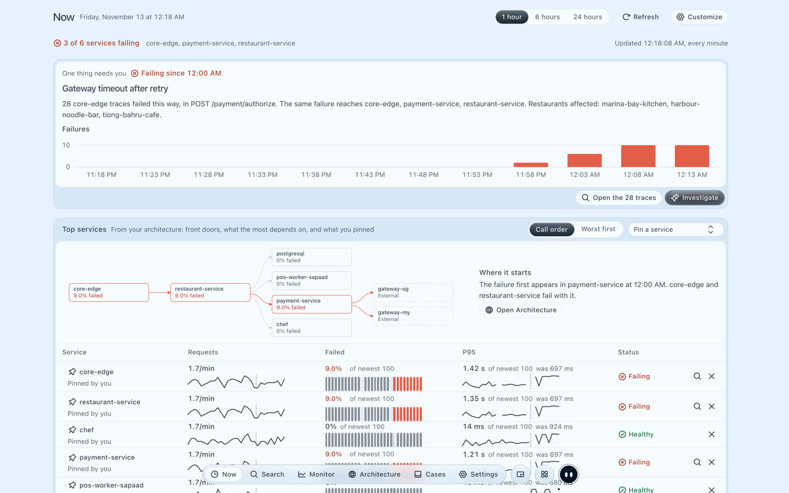
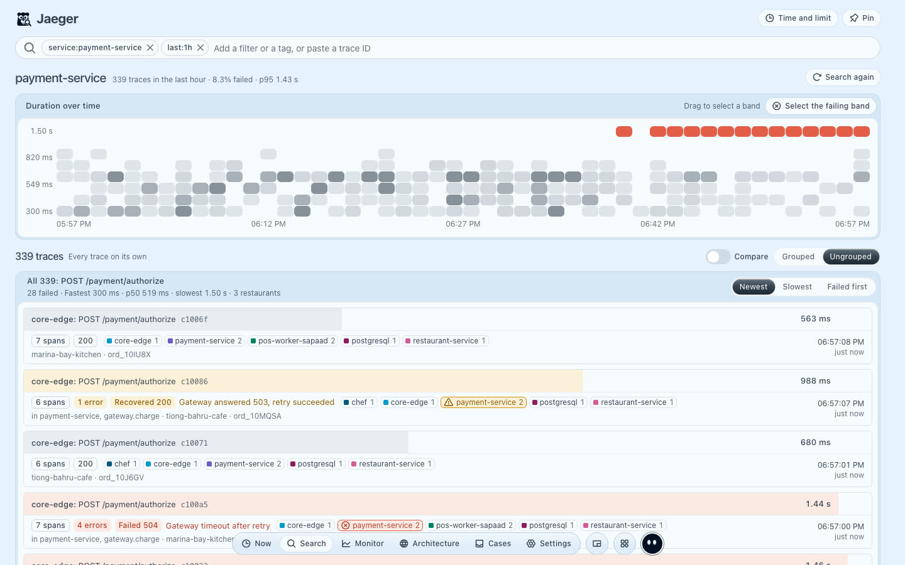
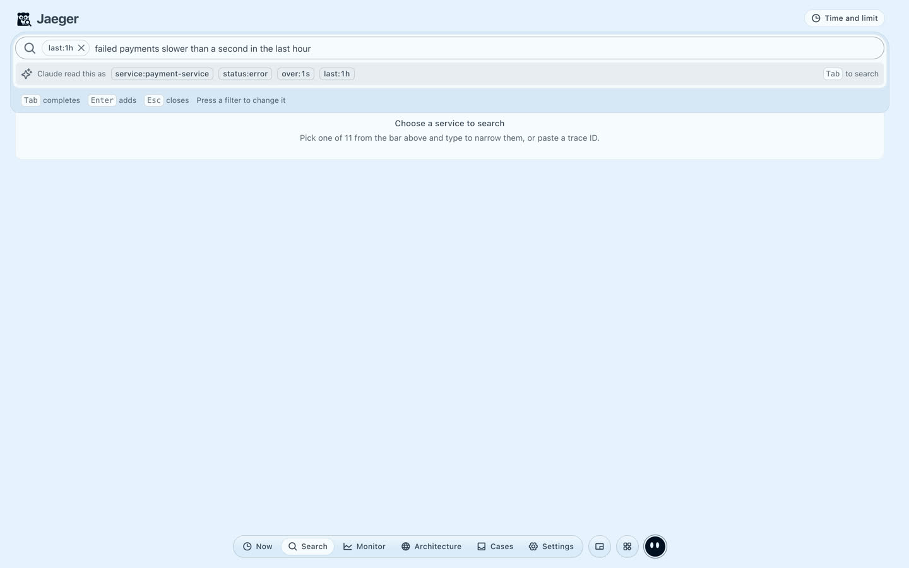
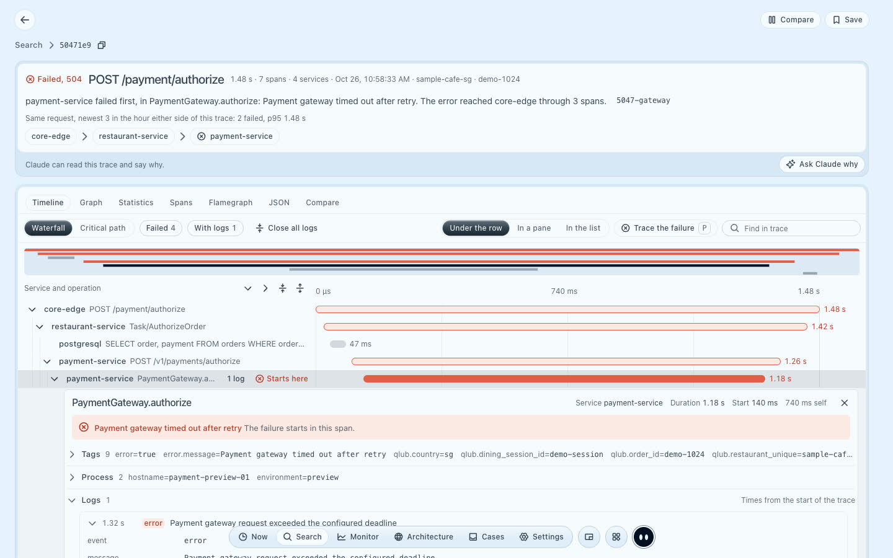
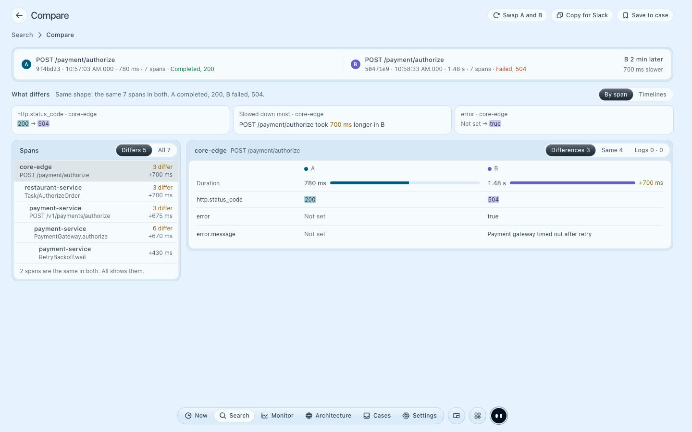
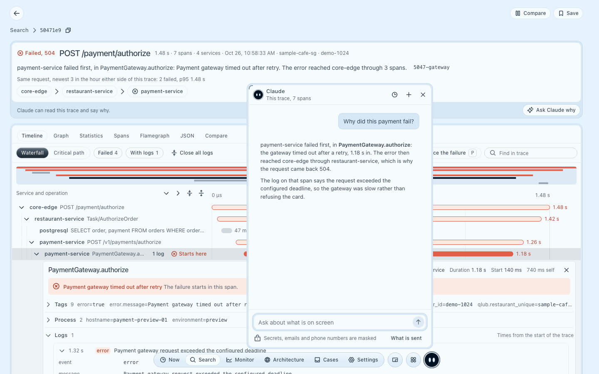

What needs you, the moment you open it.
Failing services first, the failure that started it, and where it starts in your architecture.

Know why a trace failed, before you read a span. A Chrome extension that rebuilds your team's Jaeger tab: a verdict on every trace, the path a failure took, and Claude beside it.
The gopher, Tracer. Pick yours in Settings, under Look.
Now, Search, Monitor, Architecture, Cases and Settings sit in one island at the foot of every screen, with Claude's orb at its end.
Every screen, on sample traces.
Failing services first, the failure that started it, and where it starts in your architecture.


"failed payments slower than a second in the last hour" becomes four filters you can check before anything runs.

Failed, 504, and why, before you open the waterfall.

Status, timing and payloads, paired span by span.

Questions carry on across visits, and what is sent is masked first.

Each has a light and a dark version, checked for contrast. The coral of a failure is the same in all of them.
Blue slate, cool and steady
A channel with a build out takes requests for access. One without a build yet keeps a waitlist, and everyone on it is invited when its first build ships.
No alpha yet
Every build as it is made, often more than one a day. For people who report what breaks.
No beta yet
Builds that have settled in alpha. Join the waitlist and you are invited with the first one.
2.0.0 after the betas
The release for everyone, open to download with no request. Test copies move to it when it ships.
Your request is an issue in the releases repository, from your own GitHub account, with the channel and your team.
Approving adds the approved label. Nothing else to fill in on your side.
Your account is invited to the private testers repository. GitHub emails you the invite.
Download the build from the testers' releases. When a newer one is out, Software Update says so and links to it.
Test builds download from the testers' releases once you are invited.
Every build's notes show here, newest first.
Download the release and unzip it
Put the folder somewhere it can stay. The browser keeps loading it from there.
Load the folder in your browser
Open chrome://extensions, turn on Developer mode, press Load unpacked and choose the folder.
Set up the helper, for Claude Code and updates
Needs Node.js. Run it once from inside the folder, then reload the extension. Windows uses install.cmd.
sh native-host/install.sh
Open Jaeger
The Jaeger tab opens in the toolkit, and a short welcome shows the way round.